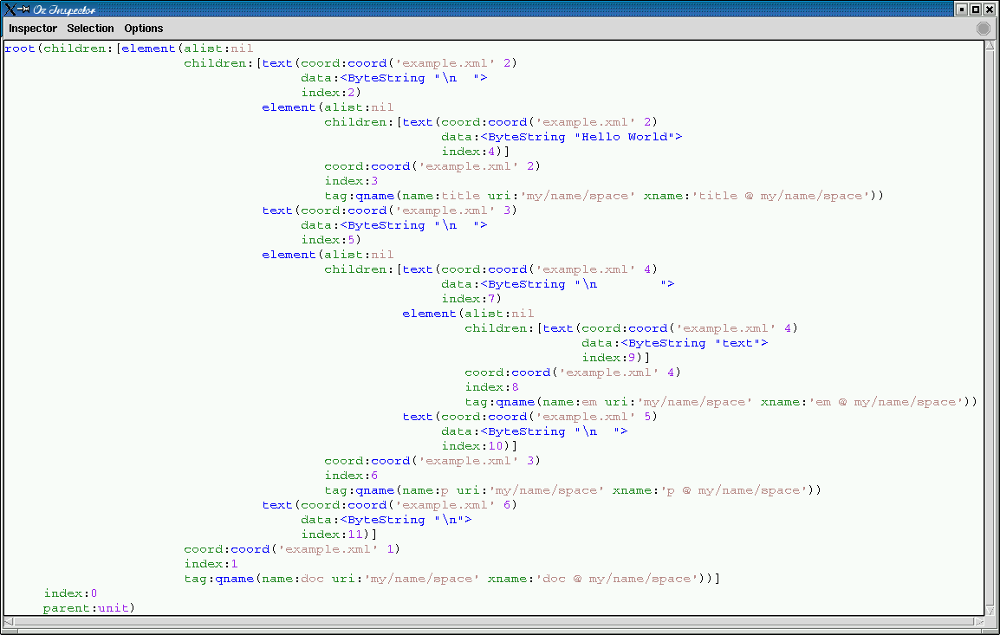
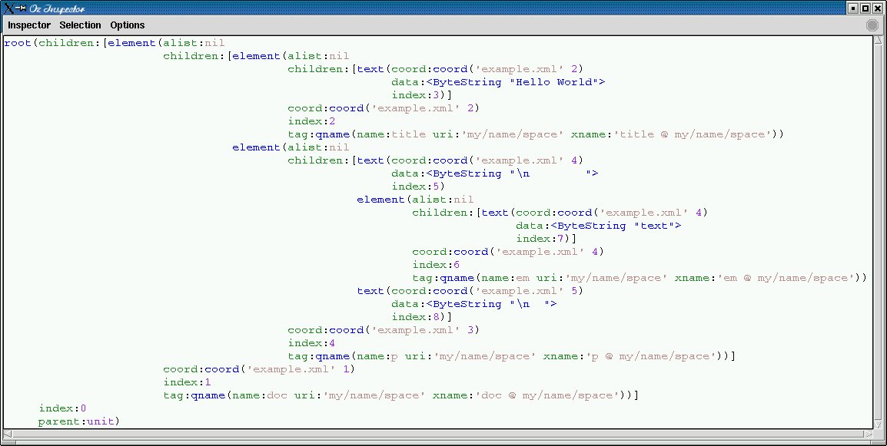
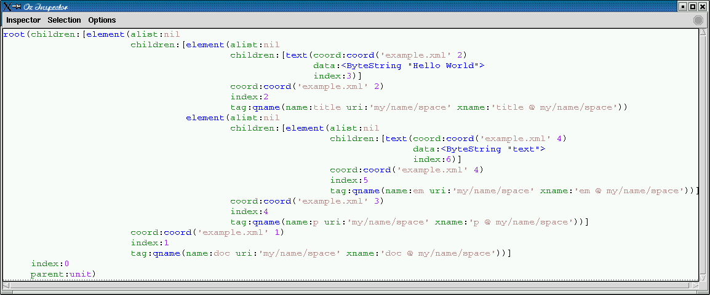

namespace aware XML parser
The Parser module implements a namespace-aware XML
parser that additionally understands the optional DOCTYPE
declaration just enough to respect ENTITY
declarations. For example, if you place the following entity
declarations in your document's DOCTYPE:
<!ENTITY section1 SYSTEM "foo/baz.xml"> <!ENTITY w3 "http://www.w3.org">
then any occurence of entity reference
§ion1; causes the contents of file
foo/baz.xml to be included and any
occurrence of entity reference &w3; is
expanded into http://www.w3.org. The parser is also
able to strip whitespace text nodes on the fly according to a
user specification.
The Parser modules exports the following
procedures:
{Parser.parse +Spec ?Tree}
Spec and returns a parsed document in the form of a
Tree. Spec is a record with the following
optional features:
string:S
url:URL
file:FILE
S, or from a
URL or a FILE
context:CTX
strip:STRIP
STRIP is a table indicating for which elements
the parser should strip isolated whitespace text nodes.
{Parser.newContext ?CTX}
{CTX.putPrefix +PREFIX +URI}
CTX the declaration that
associates namespace prefix PREFIX with namespace
uri URI; both these values should be virtual
strings{CTX.intern +USR ?SYS}
USR is a string representing a name with
possibly a namespace prefix. The return value
SYS is the unique internal representation of the
corresponding expanded name; this is a record
qname( uri:URI name:LOC xname:XLOC )
where URI is the uri of the namespace,
LOC the local part of the name, and XLOC
is the full expanded name. XLOC is just
LOC when URI is empty and is formed by
the concatenation of LOC followed by ' @ '
followed by URI otherwise. All three values are
atoms. XLOC may be used as a key that uniquely
identifies the name.{CTX.clone ?CTX2}
CTX2 of
CTX where new namespace prefix declarations may
be independently added.
{Parser.noParent +TREE1 ?TREE2}
parent
feature pointing to its parent. This makes it difficult to
display the trees in the Inspector. The
NoParent recursively removes the parent
feature and you should typically invoke it on a tree and
inspect the result.Consider a file example.xml with the following contents:
<doc xmlns="my/name/space">
<title>Hello World</title>
<p>
<em>text</em>
</p>
</doc>
Now let's parse it, with no frills:
declare [P]={Link ['x-ozlib://duchier/xml/Parser.ozf']}
{Inspect {P.noParent {P.parse init(file:'example.xml')}}}

We see that there is white space before the title
element, between the title and the p, after
the p, and inside the p on either side
of the em. We are now going to tell the parser that
it should strip the white space nodes between the children of
doc.
We create a context CTX, add to it the declaration
that prefix foo corresponds to namespace uri
my/name/space, obtain the internal representation of
name doc in this namespace, and add an entry for it
in the STRIP table:
declare
CTX={P.newContext}
{CTX.putPrefix 'foo' 'my/name/space'}
STRIP={NewDictionary}
STRIP.({CTX.intern "foo:doc"}.xname) := true
{Inspect {P.noParent {P.parse init(file:'example.xml' context:CTX strip:STRIP)}}}

as expected, the white space nodes between the children of
doc were removed, but those surrounding
em in p were preserved. We can
additionally strip those too as follows:
STRIP.({CTX.intern "foo:p"}.xname) := true
{Inspect {P.noParent {P.parse init(file:'example.xml' context:CTX strip:STRIP)}}}
